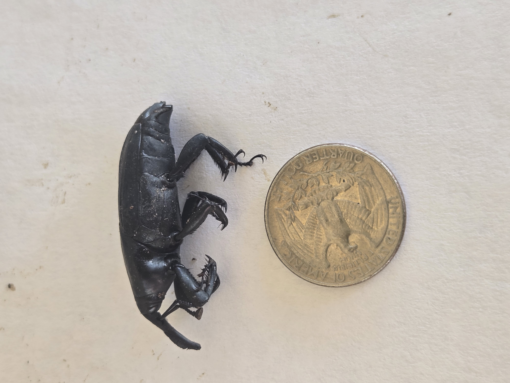
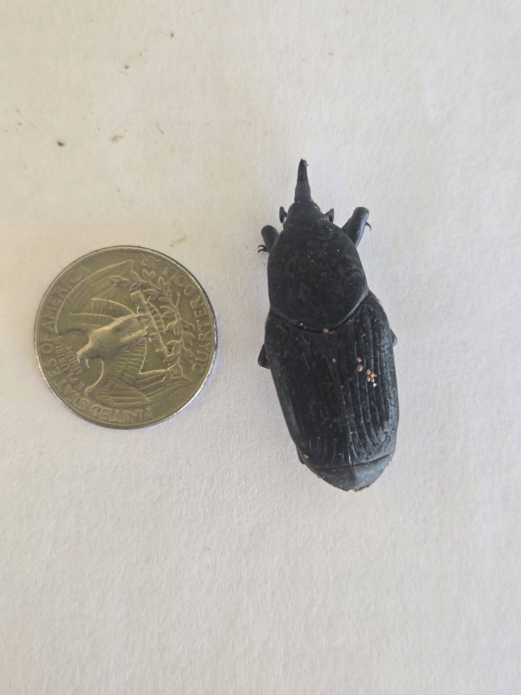
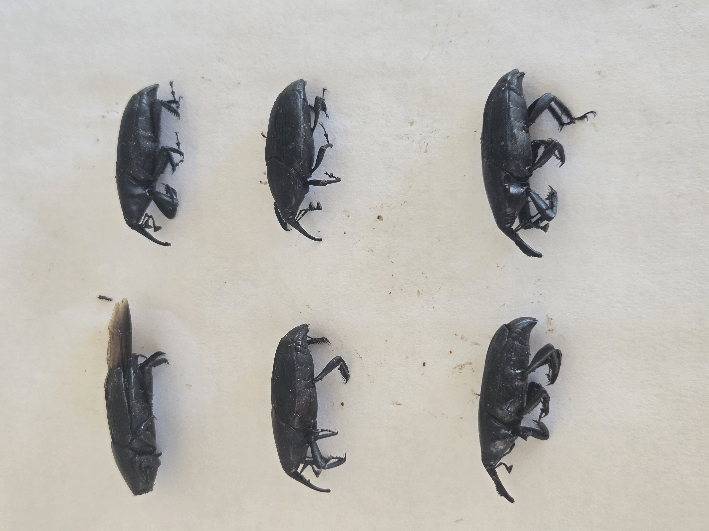

While monitoring a mature Canary Island Date Palm (CIDP) in Old Escondido, multiple adult palm weevils were recovered and documented on a residential property. This particular palm had been on my radar for some time due to ongoing signs of concerns. For homeowners throughout North County San Diego, this serves as another reminder that mature Canary Island Date Palms deserve closer observation when decline begins appearing.
Palm decline is often blamed on drought, age, poor pruning, irrigation issues, or nutrient stress. While those factors certainly matter, unusual canopy decline, distorted spear growth, thinning crowns, or rapid deterioration may deserve a closer look ? especially in areas where nearby palms have already been lost, and especially when the palm under question is a CIDP.
Mature Canary Island Date Palms are decades-old landscape assets. Once major decline becomes obvious, recovery may become much more difficult.
Documented Specimens

Side profile of a documented adult palm weevil recovered during monitoring.

Top-down specimen view showing body structure and scale.

Multiple recovered specimens documented during local CIDP monitoring.
What Homeowners Should Watch For
- Crown thinning or uneven canopy fullness
- Distorted or stunted new fronds
- Spear decline or failure
- Sudden browning near the crown
- Rapid decline in previously healthy mature palms
Not every declining palm involves palm weevil activity, but unusual decline in mature Canary Island Date Palms deserves attention ? particularly when nearby palms are also struggling or have already been removed.
Learn more about South American Palm Weevil awareness and palm protection in San Diego .